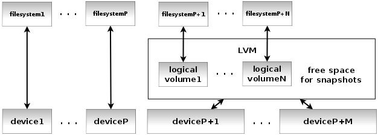

Preparing for the backup
Choosing destination backup storage
Tar-LVM suite is able to store the backups either via SSH or to any local device connected to one of the machines. Moreover, the device can be connected to one of the physical machines with KVM virtualization and attached to its virtual machines during their backup. Both possibilities can be combined together.
The scheme is depicted on the following figure.

|
The created archives and logs are thus written directly to the mounted backup device or to the SSHFS network filesystem using the SFTP protocol. However, bare in mind that the direct access method for storing the backups can be used just for a single physical machine and its KVM virtual machines, all other hosts (either physical or virtual) must use SSHFS if they want to store the archives and logs to the same storage.
This means that the backup destination can be a network storage accessible via SSH (e.g. a NAS) or any device directly connected to one of the physical machines with Linux (such a a large RAID array or simply a hard drive).
There's one more viewpoint that should be taken into account when choosing the backup storage. If it is intended to be accessed directly from one physical machine and its KVM virtual machines, then the Tar-LVM suite must be triggered from that physical machine to be able to attach the backup device to each machine sequentially and not concurrently. All other hosts using the SSH access method can be then backed up in parallel and the backup process may be triggered from the physical machine as well, from each backed-up host or from any other host.
Backup host filesystem prereguisities
If you want to achieve minimal downtime of your services and still be able to create consistent backup of a snapshot of whole operating system, most of its filesystems must be located on LVM devices with suitable layout. The reason is simple. If a snapshot of a running system is to be created, all filesystems must be remounted read-only during the snapshot creation and those that are not located on LVM and thus are unable to create snapshots, must stay remounted read-only during the whole backup process.
This idea is expressed on the following figure.
|  |
As you can see and as it was mentioned above, all fileystems don't have to be necessarily created on LVM volumes. Those of them that are mounted read-only during normal operation (i.e. most of the time - except maintenance) don't need to meet this condition.
Depending on your filesystem layout, those are usually filesystems mounted to the /boot or /usr directories and even the root filesystem / itself can stay read-only most of the time if there are separate partitions or volumes for writable locations like /var, /srv, /opt etc. The /dev or /run (/var/run) directories are nowadays usually located in memory.
However, there's an important condition if the backups should be triggered automatically by the Cron scheduler. In that case, the /tmp directory must stay writable during archiving. This isn't luckily any issue, because the temporary files are usually deleted when the operating system starts. And that's the case after restoring whole system as well. There's therefore no need to backup the /tmp or /var/tmp filesystems.
Let's look at two examples of the filesystem layout. The first layout contains many separate filesystems and most of them are located on LVM. Even those that can be mounted read-only during normal operation such as the /usr or / filesystems. The LVM read-only filesystems can be safely remounted read-write during the backup after their snapshots are created.
| mountpoint | LVM | read-only |
|---|---|---|
| / | LVM | ro |
| /boot | - | ro |
| /usr | LVM | ro |
| /var | LVM | rw |
| /tmp | LVM | rw |
| /var/tmp | LVM | rw |
| /var/mail | LVM | rw |
| /srv | LVM | rw |
| /opt | LVM | rw |
| /home | LVM | rw |
On the contrary, the second example layout contains as few filesystems as possible for the Tar-LVM backup to operate properly and none of them are on LVM.
| mountpoint | LVM | read-only |
|---|---|---|
| / | - | rw |
| /boot | - | ro |
| /tmp | - | rw |
The advantage of the first layout is obviously the fact that the downtime of services provided by the backed-up host is minimal. It's necessary just to stop most services, remount filesystems read-only, create snapshots, remount filesystems back read-write and the services may be started again after that because the read-only filesystems and frozen snapshots are being backed-up. The second layout enforces remounting the root / filesystem read-only during the whole backup which necessitates shutting down most services during the whole period.
The topic of partitioning the system is behind the scope of this document. If you want to know more about the reasons of creating several separate partitions, see the document Securing Debian Manual, especially its parts Partitioning the system and Mounting the partitions the right way.
Configuring mail delivery
If you want to automate the backups, i.e. invoke the backup commands from the Cron scheduler, or if you want to trigger the backup centrally from one point for the whole set of hosts (or potentially from more points for a few subsets of hosts) by using tar-lvm-all, you need to have your mail system configured properly on all hosts running the backup scripts. Cron must be able to deliver potential errors that cannot be written to the logs (e.g. if the backup storage isn't mounted yet) or do not belong there. And the same applies for the tar-lvm-one scripts invoked on each host by the tar-lvm-all script running centrally - some errors can be delivered just by email.
The tar-lvm-all script can be configured to instruct the backup scripts on each host not to use local MTA, but directly the SMTP protocol to connect to some mail server, but that's not the preferred solution. If the delivery fails, there's neither a way how to inform about the error nor any later repeated delivery attempt. The error output can get lost easily.
The simplest configuration of the whole mail system could be implemented as follows. Let's configure one host as the destination host for your email domain - either with separate mailboxes or with a catch-all mailbox depending on your needs. All other hosts could be configured to relay everything excluding mails to root to the destination server prepared earlier. This can be achieved relatively easily by using Postfix, for instance. If it is in default configuration that delivers emails to local mailboxes, it should be sufficient to add or update just a few configuration directives in the /etc/postfix/main.cf file.
A very simple example of Postfix directives to update on the mail destination host follows:
- myhostname = smtp.domain.org
- myorigin = domain.org
- mydestination = domain.org smtp.domain.org localhost
- mynetworks =
- relayhost =
And now a very simple example for the host to backup:
- myhostname = hostN.domain.org
- myorigin = domain.org
- mydestination =
- mynetworks = 127.0.0.1/32
- relayhost = [smtp.domain.org]
If you always want to keep mails to the localhost and hostN.domain.org domains locally, modify mydestination as follows:
- mydestination = hostN.domain.og localhost
All emails to the root user can be then kept on the host by creating the file /etc/postfix/virtual with the following content:
- root root@localhost
This change can be activated by invoking:
- postmap /etc/postfix/virtual
And by adding virtual alias map directive to the main.cf configuration file.
- virtual_alias_maps = hash:/etc/postfix/virtual
The servers shouldn't be opened for relaying using the described configuation, but it's wise to double-check and test your configuration to avoid this security issue.
Setting up SSH authentication
If the Tar-LVM scripts need to communicate with other hosts, they use the SSH protocol and they authenticate with SSH public key authentication. Such remote access is currently used in three different ways.
- If the host being backed up stores the archives and logs to remote SSH storage, it uses the SSHFS protocol based on SFTP.
- If the backup is triggered centrally for the whole set of hosts (or a few subsets) using tar-lvm-all, the backups are triggered and controlled via SSH on each host.
- If the tar-lvm-one script for backing up one host uses shared configuration, this configuration is obtained from the shared location via SSH.
Authentication and authorization is always based on SSH public key authentication as mentioned earlier. This kind of authentication must be allowed on the server side by using the PubkeyAuthentication directive in the configuration file of the sshd daemon (e.g. in /etc/ssh/sshd_config).
- PubkeyAuthenticaton yes
It can be also left out, because that's usually the default setting.
Configuration on the client side doesn't have to allow this kind of authentication - see the PubkeyAuthentication directive again in the configuration file of the ssh client (e.g. /etc/ssh/ssh_config). If it is set to no, it can be changed in the user's configuration file located in his home directory or directly on the command-line.
- ssh -o PubkeyAuthentication=yes user@server
If public key authentication is allowed on both client and server side, a public/private key pair must be generated on the client side for correct user by using the ssh-keygen command. Ensure that you are logged in as the connecting user and don't protect the private key by any passphrase, because it is going to be used non-interactively.
- ssh-keygen
After that place the generated public key (i.e. the contents of the file ~/.ssh/id_rsa.pub on the client side) as a new line to the file ~/.ssh/authorized_keys on the server side. Check again that you are working under the correct destination user account on the server side.
Your SSH access shouldn't require any password now, even if it is very well protected. If it still asks for one, check the permissions on the ~/.ssh directory that should be set to 700 or eventually on the file ~/.ssh/authorized_keys where 644 should be sufficient.